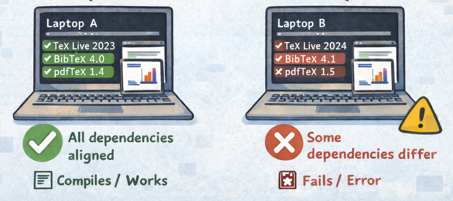
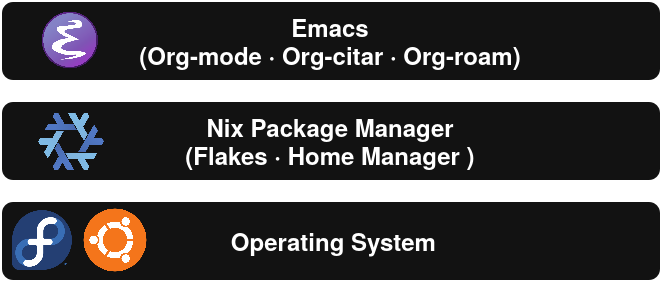
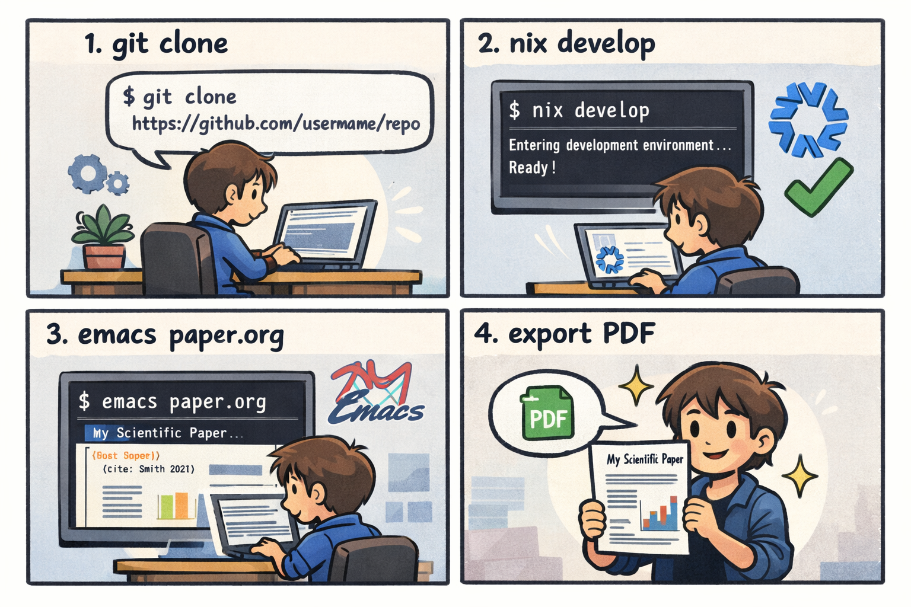

Building a Reproducible Scientific Writing Environment using Emacs and Nix
Lionel Wisskirchen
Motivation

- Reproducibility is a core principle of science
- Scientific papers today rely on complex digital environments
- ❌ Dependencies can break, become incompatible
- ❌ Results: Inconsistencies, hindered collaboration and fragile stability
Existing Solutions
| Pros | Cons |
|---|---|
| ✅ Stable and consistent environment | ❌ Subscription based (for all functionalities) |
| ✅ Easy collaboration | ❌ Slow compilation |
| ❌ No offline support | |
| ❌ Plain LaTeX |
Components

Emacs

- Powerful, highly extensible and customizable text editor
- Developed by Richard Stallman in the 1980s
- Completely keyboard driven
- Single environment for writing, coding, presentations, …
- Packages for nearly every use-case
Org-Mode
- Mode for document editing, formatting and organizing
- Supports tables, figures, source code blocks
- Different export backends
Org-Citar

- Integrated reference management for Org-mode
- Supports citation insertion and bibliography management
- Contextual lookup directly inside Emacs
- Works with external BibTeX or CSL-JSON libraries
Org-Roam

- Networked knowledge base inspired by Zettelkasten
- Interlinked notes, literature annotations and ideas
- Supports long-term research
Nix
- Emacs alone ≠ reproducible system dependencies
- Declarative package and system manager
- NixOS is a linux distribution based on Nix
Flakes
- Modern structure for Nix configurations
- Explicit version pinning and deterministic dependencies
- Often used in complex development environments
Home Manager
- Declarative, user-level configuration manager
- Manages dotfiles, app settings and dev tools
- Guarantees reproducible user configuration
Demo

Summary
- Fully reproducible scientific writing environment with Emacs and Nix
- Completely Open Source
- Integrated workflow: Org-mode, Org-Citar, Org-Roam
- No need to write plain LaTeX